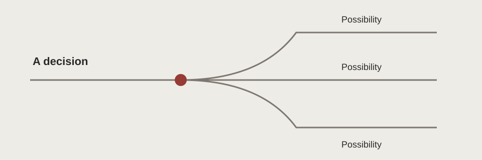

Chs. 2, 7–8
- Characters
- Jonas and Chief Elder
- Technique
- Ceremonial diction
- Interpretation
- Assignments present adult decisions as recognition, narrowing the space for self-direction.
A HUSKYDADDY NOVEL STUDY
When does protection become control?
KEY IDEA
Protection can have a cost.
Test what people gain from safety and what they lose when decisions are made for them.
When does protection become control?
Choice is a topic; a theme statement explains a relationship between choice and other human needs. The interesting question is not whether freedom sounds attractive. It is what happens when a society treats uncertainty as a reason to make decisions permanently unavailable. A strong argument must account for protection as well as restriction.
Full-novel analysis is hidden. Choose “Full novel” above when you are ready. Chapter-by-chapter notes remain available in the reading guide.

Evidence note: Novel events below are paraphrased. Chapter numbers locate the relevant events; use page numbers from your own edition in formal MLA writing. Interpretations are arguments to test, not verified statements of authorial intention.
Jonas initially trusts assigned roles. Colour makes him imagine alternatives, although he still fears wrong choices. Knowledge of release finally makes obedience unacceptable. His escape does not remove danger; it makes him responsible for responding to it.
Father’s satisfaction with nurturing gives the system a persuasive example. The Elders do not simply choose work at random: observation can recognize abilities. Yet the ceremony also presents a personal future as an announcement rather than a negotiation.
The difference between a fitting result and a self-directed process is crucial. Jonas’s selection intensifies it because praise cannot substitute for informed consent to painful duties. Ceremonial diction makes authority sound attentive, revealing how control can operate through recognition as well as force.
Colour makes difference desirable before Jonas has a complete argument for changing society. His wish to choose between things is followed by fear of wrong choices, especially major decisions. Dialogue exposes the struggle between new perception and inherited reasoning.
This is an important characterization choice: a person shaped by control may initially defend it even while feeling its losses. The colour motif therefore contributes to meaning by changing what Jonas can imagine, not by instantly solving the question of how people should choose.
The recording makes control a question of life rather than preference. Jonas’s response to the smaller twin’s death creates a moral distinction between an approved act and an acceptable one. When Gabriel faces release, accelerated pacing removes the preparation that might have made departure safer.
Jonas must judge the rule against a specific person’s need. His action does not establish that every private impulse is wise; it establishes that institutional permission cannot be the only possible basis for ethical judgement.
Hunger and rough land expose benefits that community life genuinely supplied. Setting therefore qualifies the argument for freedom rather than turning the journey into an effortless reward. Jonas cannot preserve every protection while rejecting every restriction.
Gabriel’s danger inside the community prevents the comparison from becoming a simple calculation of comfort. Readers must hold safety and moral agency together, asking which harms an orderly system prevents and which it creates through its own rules.
A plausible objection is that the community’s predictability protects vulnerable people from dangers they could not manage alone. Father’s pleasure in his work and the boys’ hunger support taking that objection seriously. The response is not to dismiss all planning.
It is to distinguish cooperative support from arrangements that remove the possibility of questioning harmful decisions. The novel supplies reasons to criticize the system without supplying a complete constitution for a replacement society. Claims about its ideal government would go beyond the evidence.
Read across to compare; use stacked rows for a closer view.
| Moment | Characters | Technique | Interpretation |
|---|---|---|---|
| Chs. 2, 7–8 | Jonas and Chief Elder | Ceremonial diction | Assignments present adult decisions as recognition, narrowing the space for self-direction. |
| Chs. 12–13 | Jonas and Giver | Colour and dialogue | Perceiving difference helps Jonas imagine choice, but his hesitation shows the persistence of social conditioning. |
| Chs. 19–21 | Jonas, Father, Gabriel | Revelation and accelerated pacing | The recording makes delay ethically costly; an urgent choice replaces a carefully prepared plan. |
| Ch. 22 | Jonas and Gabriel | Setting and contrast | Hunger makes the costs of freedom real without making Gabriel’s threatened death acceptable. |
Lowry presents freedom as responsibility for uncertain consequences rather than as the absence of difficulty. When Jonas begins seeing colour, he wants alternatives but also repeats the community’s fear that people might choose wrongly (Chs. 12–13). The dialogue reveals that control has shaped his reasoning, not merely his permitted actions. His development therefore requires revising an inherited way of judging safety. Later, Gabriel’s threatened release forces him to leave before the plan is ready (Ch. 21). The sudden change in pacing makes choice costly: he acts without the preparation he had expected. Hunger in the following chapter then confirms that escape offers no automatic reward. However, returning to predictable care would not protect Gabriel from the rule that endangered him. By placing genuine vulnerability outside the community beside institutional violence within it, Lowry complicates a simple safe-versus-dangerous division. Jonas’s action supports a qualified argument that people need the capacity to challenge authority, even when exercising that capacity cannot guarantee comfort or success.
Read its construction: The opening makes a claim. Specific chapter events provide evidence. The explanation connects narrative choices with consequences. The ending returns to the qualified argument rather than merely announcing that the evidence proves it. Page citations must come from your edition.
Suggested responses · display feature only, not secure access control.
Claim: control protects ___ but limits ___. Add one early example of an assigned decision and one later choice. Explain how the contrast changes the meaning of safety.
To what extent does the novel distinguish freedom from comfort? Develop a qualified argument using two stages of Jonas’s journey.
Develop a sustained argument using at least three moments. Make one paragraph address a plausible complication rather than ignoring it.
The novel questions restrictions that prevent informed moral judgement, not every form of shared responsibility or practical organization.
His action responds to a clear danger, but the survival crisis keeps his judgement from becoming a guarantee of every outcome.
Related themes: Coming of Age and Moral Responsibility, Individuality and Sameness. Return to Characters and Relationships, Conflicts, and Style and Techniques to test how the evidence supports your reading. These links contain full-novel material.